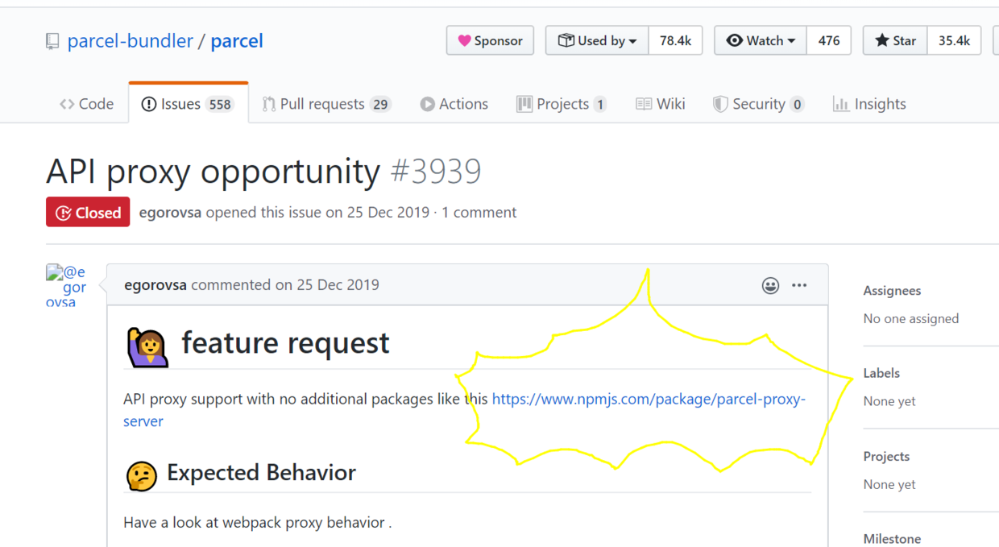
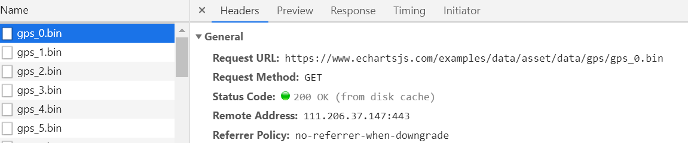
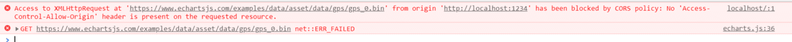
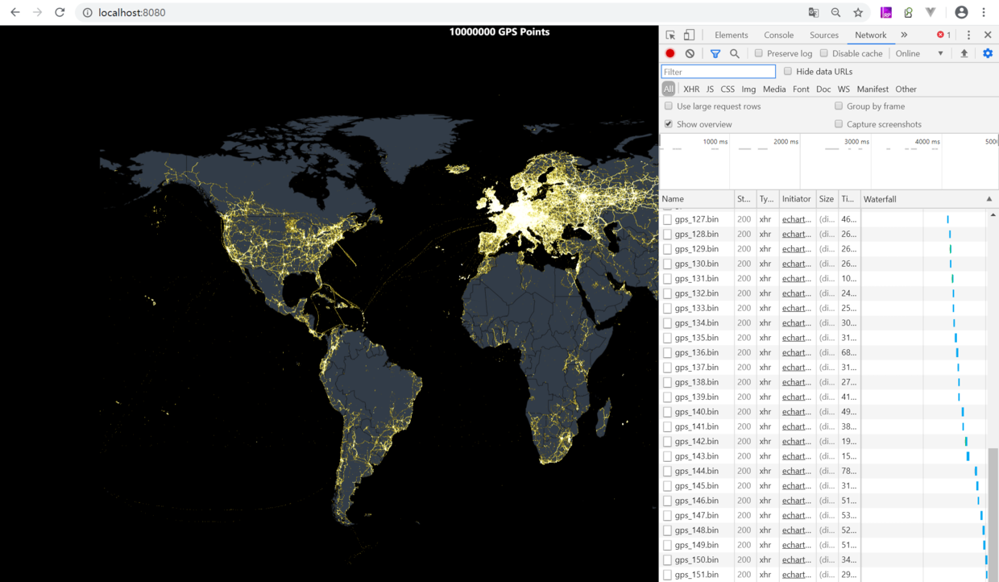

[PARCEL]还是很快快，代理跨域parcel-proxy-server
今天我在运行 echarts 实例代码时，请求数据时发现跨域了，想到 PARCEL 启动时本身就有一个本地的 server 服务，那能不能在这个服务里代理一下我的 api 请求呢？ 去 github 上 parcel 的 issue 里一搜，还真有大神写好了的

瞟了眼代码好像是用 express+http-proxy-middleware+parcel 的 api 实现的，不研究，研究就不快快了，别人写好用就行了测试时遇到了跨域问题
跑一个 echarts 1 千 w 点的实例代码时，发现数据资源跨域了，请求不到


试试刚才找的 parcel-proxy-server 在 npm 简介里有他的例子，parcel-proxy-server:https://www.npmjs.com/package/parcel-proxy-server
proxy.js
const ParcelProxyServer = require('parcel-proxy-server');
// configure the proxy server
const server = new ParcelProxyServer({
entryPoint: './path/to/my/entry/point',
parcelOptions: {
// provide parcel options here
// these are directly passed into the
// parcel bundler
//
// More info on supported options are documented at
// https://parceljs.org/api
https: true,
},
proxies: {
// add proxies here
'/api': {
target: 'https://example.com/api',
},
},
});
// the underlying parcel bundler is exposed on the server
// and can be used if needed
server.bundler.on('buildEnd', () => {
console.log('Build completed!');
});
// start up the server
server.listen(8080, () => {
console.log('Parcel proxy server has started');
});
官网没有很详细的使用方法，不过没关系，稍微读一下代码。
1.怎么运行？参数配置？
看最后server.listen,哦很眼熟，这个 JS 起了一个 httpserver，那这个 JS 尝试一下用 node 运行一下这个 js node ./proxy.js
起来了，但是为什么能这么启动 PARCEL 打包呢？
我又去到 parcel 官网文档中找到了，parcel 提供了 API 用 js 启动：https://parceljs.org/api.html
稍微 ctrl 点一下 ParcelProxyServer 找下代码，可以发现entryPoint，parcelOptions，这两个参数，全部都是用于 parcel 的打包配置，所以都去 PARCEL 官网找就没问题。
2.Proxy？
再点一下 ParcelProxyServer 代码，看到他的引用
const fs = require('fs');
const https = require('https');
const express = require('express');
const Bundler = require('parcel-bundler');
const proxyMiddleware = require('http-proxy-middleware');
const opn = require('opn');
const selfSigned = require('selfsigned');
大大的 express 和 proxy-middleware，那猜测他是 express 起的服务，使用 http-proxy-middleware 中间件实现的请求代理，然后用 parcel 的 api 进行打包 那简单了，去翻http-proxy-middleware的文档！https://www.npmjs.com/package/http-proxy-middleware
最后我的 proxy 代码是这样的，请求/api 路径会被中间件拦截，后台去请求https://www.echartsjs.com
const ParcelProxyServer = require('parcel-proxy-server');
// configure the proxy server
const server = new ParcelProxyServer({
entryPoint: './index.html',
parcelOptions: {},
proxies: {
// add proxies here
'/api': {
target: 'https://www.echartsjs.com',
changeOrigin: true,
pathRewrite: {
'/api': '/examples',
},
},
},
});
// the underlying parcel bundler is exposed on the server
// and can be used if needed
server.bundler.on('buildEnd', () => {
console.log('Build completed!');
});
// start up the server
server.listen(8080, () => {
console.log('Parcel proxy server has started');
});
又可以开心的测试了
